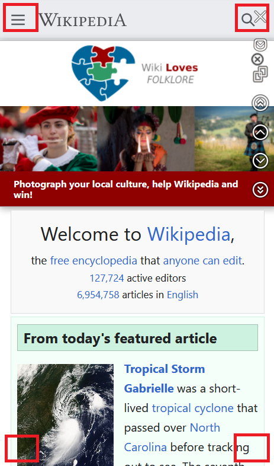
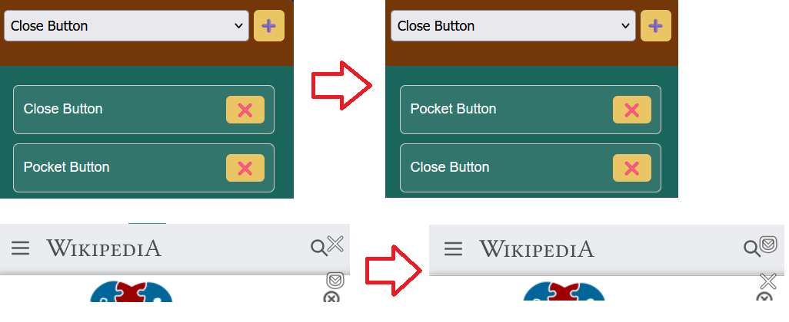

Why did I develop Show Close Tab Firefox extension?
The default close tab button is hard to use
To close a web page on your phone, click the square in the upper right corner and then click Close. I just wonder if there is a button that can directly close the paging on the web page.
The button will block the web page operation button
Just place the buttons in four locations on the web page.

Don’t put the button first
You can add or remove buttons or sort buttons. Encountered a problem, the drag to sort button does not work on mobile phones.
